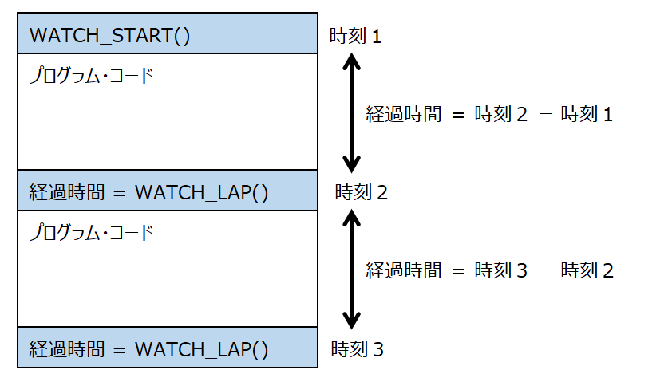
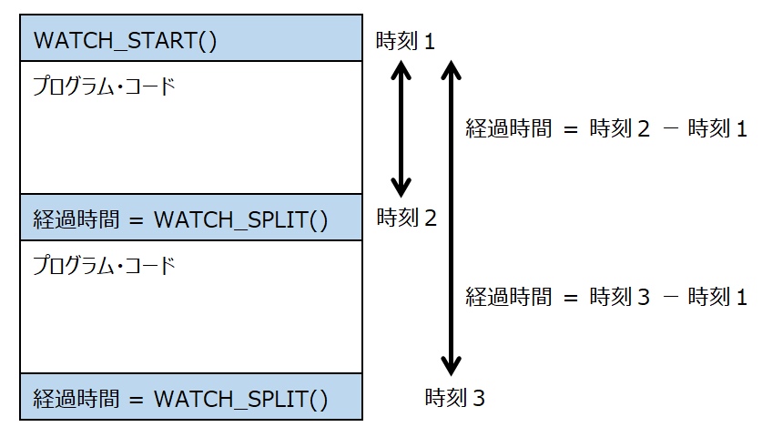
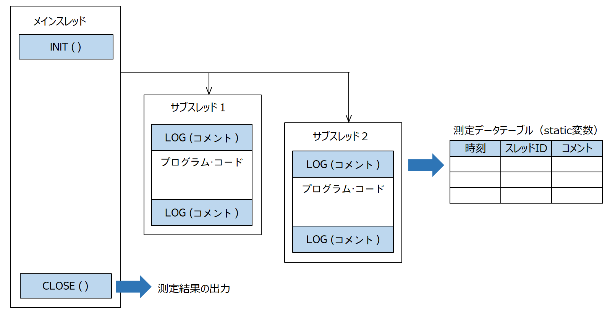

Elapse測定 〜マルチスレッド対応、C言語で作成〜
プログラムコードにC言語関数を埋め込み、特定のプログラムコードの処理時間を測定する。C言語のソースファイル（UAElapse.h/m）として提供する。使用者はヘッダファイルをインクルードして使用する
測定に使用する時刻は、C言語POSIXライブラリの clock_gettime関数（CLOCK_REALTIME）で得る。なお、秒未満の値の制度システム環境に依存する。関数の仕様上ナノ秒まで計測できるよう定義されてているが、筆者のMacBook Proでは、最小単位は 1000ナノ秒(1マイクロ秒)である。
ストップウォッチ機能：ラップタイム計測
チェックポイントごとの間隔（秒数）を計算し、double型の変数として戻す。

サンプルコード
ストップウォッチ機能：スプリットタイム計測
開始時刻からの累積時間（秒数）を計算し、double型の変数として戻す。

サンプルコード
ストップウォッチ機能は、マルチスレッド処理に対応していない。マルチスレッドで実行した場合、時刻の開始と終了の組み合わせが、スレッッド間で入り繰ってしまう。正しい経過時間を取得するためには、処理ごとにスレッッドIDを特定し、処理をグループ化する必要がある。
経過時間の計測（マルチスレッッド対応）
１. チェックポイントごとにログ出力処理を埋め込む
時刻、スレッドIDを記録したログを作成し、static領域に作成した測定データテーブルに追加する。
２. 最後に処理時間の計算を行う
作成したログをスレッッドIDでソートし、スレッドごとに処理時間を計算し、結果を標準出力に出力（printf）する。処理時間は、ログ出力とログ出力の間隔となる。（ラップタイムと同じ）
この操作は、全てのログ出力が終わってから実行すること。

サンプルコード
Cソースファイル
関数の宣言
関数の本体
UAElapse.m
ログ出力処理の直列化
本処理では、ログを出力するテーブルは、ログの件数の増加に従って、メモリを動的に確保する方法をとる。
ログ出力処理は、件数の確認→必要ならメモリを確保→ログの追加→件数のインクリメントというステップを踏むが、これはスレッッドごとに不可分な処理（atomic）でなければならない。そのために、ログ出力処理は、GCD機能のシリアルキューを利用したトランザクション処理とする。